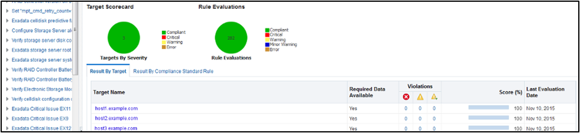
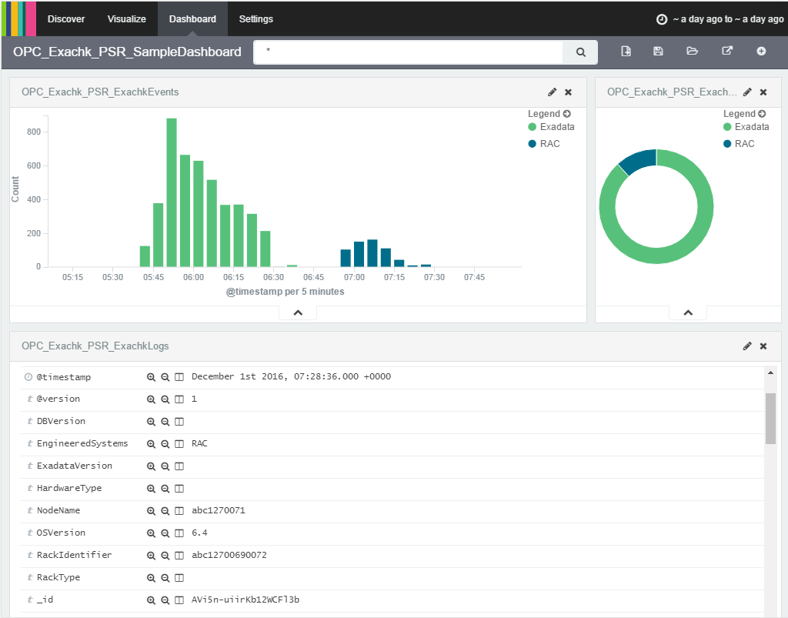

1.11 Integrating Health Check Results with Other Tools
Integrate health check results from Oracle ORAchk and Oracle EXAchk into Enterprise Manager and other third-party tools.
- Integrating Health Check Results with Oracle Enterprise Manager
Integrate health check results from Oracle ORAchk and Oracle EXAchk into Oracle Enterprise Manager. - Integrating Health Check Results with Third-Party Tool
Integrate health check results from Oracle ORAchk and Oracle EXAchk into various third-party log monitoring and analytics tools, such as Elasticsearch and Kibana. - Integrating Health Check Results with Custom Application
Oracle ORAchk and Oracle EXAchk upload collection results from multiple instances into a single database for easier consumption of check results across your enterprise.
1.11.1 Integrating Health Check Results with Oracle Enterprise Manager
Integrate health check results from Oracle ORAchk and Oracle EXAchk into Oracle Enterprise Manager.
Oracle Enterprise Manager Cloud Control releases 13.1 and 13.2 support integration with Oracle ORAchk and Oracle EXAchk through the Oracle Enterprise Manager ORAchk Healthchecks Plug-in. The Oracle Engineered System Healthchecks plug-in supported integration with EXAchk for Oracle Enterprise Manager Cloud Control 12c release 12.1.0.5 and earlier releases.
With Oracle Enterprise Manager Cloud Control 13.1, Oracle ORAchk and Oracle EXAchk check results are integrated into the compliance framework. Integrating check results into the compliance framework enables you to display Compliance Framework Dashboards and browse checks by compliance standards.
-
Integrate check results into Oracle Enterprise Manager compliance framework.
-
View health check results in native Oracle Enterprise Manager compliance dashboards.
-
Related checks are grouped into compliance standards where you can view targets checked, violations, and average score.
-
From within a compliance standard, drill-down to see individual check results and break the results by targets.
Figure 1-156 Compliance Standards Drill-Down

Description of "Figure 1-156 Compliance Standards Drill-Down"
Note:
Although Oracle ORAchk and Oracle EXAchk do not require additional licenses, you require applicable Oracle Enterprise Manager licenses.
1.11.2 Integrating Health Check Results with Third-Party Tool
Integrate health check results from Oracle ORAchk and Oracle EXAchk into various third-party log monitoring and analytics tools, such as Elasticsearch and Kibana.
JSON provides many tags to allow dashboard filtering based on facts such as:
-
Engineered System type
-
Engineered System version
-
Hardware type
-
Node name
-
Operating system version
-
Rack identifier
-
Rack type
-
Database version
Use the Kibana dashboard to view health check compliance across the data center.
Filter the results based on any combination of exposed system attributes.
Figure 1-157 Third-Party Tool Integration
Description of "Figure 1-157 Third-Party Tool Integration"
Report_Output_Dir/upload/mymachine_orachk_results.json
Report_Output_Dir/upload/mymachine_orachk_exceptions.jsonReport_Output_Dir/upload/mymachine_exachk_results.json
Report_Output_Dir/upload/mymachine_exachk_exceptions.json-
Run the
–syslogoption to write JSON results to thesyslogdaemon.For example:./orachk –syslog./exachk –syslog -
Verify the
syslogconfiguration by running the following commands:Oracle ORAchk and Oracle EXAchk use the message levels:
CRIT,ERR,WARN, andINFO.$ logger -p user.crit crit_message $ logger -p user.err err_message $ logger -p user.warn warn_message $ logger -p user.info info_message -
Verify in your configured message location, for example,
/var/adm/messagesthat each test message is written.
1.11.3 Integrating Health Check Results with Custom Application
Oracle ORAchk and Oracle EXAchk upload collection results from multiple instances into a single database for easier consumption of check results across your enterprise.
Use Oracle Health Check Collections Manager or your own custom application to consume health check results.
-
Upload the collection results into the following tables at the end of a collection:
Table 1-17 Uploading Collection Results into a Database
Table What Get’s Uploaded rca13_docsFull zipped collection results.
auditcheck_resultHealth check results.
auditcheck_patch_resultPatch check results.
If you install Oracle Health Check Collections Manager, then these tables are created by the install script.
-
If the tables are not created, then use the following DDL statements:
-
DDL for the RCA13_DOCS table
CREATE TABLE RCA13_DOCS ( DOC_ID NUMBER DEFAULT to_number(sys_guid(),'XXXXXXXXXXXXXXXXXXXXXXXXXXXXXXXX') NOT NULL ENABLE, COLLECTION_ID VARCHAR2(40 BYTE), FILENAME VARCHAR2(1000 BYTE) NOT NULL ENABLE, FILE_MIMETYPE VARCHAR2(512 BYTE), FILE_CHARSET VARCHAR2(512 BYTE), FILE_BLOB BLOB NOT NULL ENABLE, FILE_COMMENTS VARCHAR2(4000 BYTE), TAGS VARCHAR2(4000 BYTE), ATTR1 VARCHAR2(200 BYTE), UPLOADED_BY VARCHAR2(200 BYTE) DEFAULT USER, UPLOADED_ON TIMESTAMP (6) DEFAULT systimestamp, SR_BUG_NUM VARCHAR2(20 BYTE), CONSTRAINT RCA13_DOCS_PK PRIMARY KEY (DOC_ID), CONSTRAINT RCA13_DOCS_UK1 UNIQUE (FILENAME) ); -
DDL for the auditcheck_result table
CREATE TABLE auditcheck_result ( COLLECTION_DATE TIMESTAMP NOT NULL ENABLE, CHECK_NAME VARCHAR2(256), PARAM_NAME VARCHAR2(256), STATUS VARCHAR2(256), STATUS_MESSAGE VARCHAR2(256), ACTUAL_VALUE VARCHAR2(256), RECOMMENDED_VALUE VARCHAR2(256), COMPARISON_OPERATOR VARCHAR2(256), HOSTNAME VARCHAR2(256), INSTANCE_NAME VARCHAR2(256), CHECK_TYPE VARCHAR2(256), DB_PLATFORM VARCHAR2(256), OS_DISTRO VARCHAR2(256), OS_KERNEL VARCHAR2(256), OS_VERSION NUMBER, DB_VERSION VARCHAR2(256), CLUSTER_NAME VARCHAR2(256), DB_NAME VARCHAR2(256), ERROR_TEXT VARCHAR2(256), CHECK_ID VARCHAR2(40), NEEDS_RUNNING VARCHAR2(100), MODULES VARCHAR2(4000), DATABASE_ROLE VARCHAR2(100), CLUSTERWARE_VERSION VARCHAR2(100), GLOBAL_NAME VARCHAR2(256), UPLOAD_COLLECTION_NAME VARCHAR2(256) NOT NULL ENABLE, AUDITCHECK_RESULT_ID VARCHAR2(256) DEFAULT sys_guid() NOT NULL ENABLE, COLLECTION_ID VARCHAR2(40), TARGET_TYPE VARCHAR2(128), TARGET_VALUE VARCHAR2(256), CONSTRAINT "AUDITCHECK_RESULT_PK" PRIMARY KEY ("AUDITCHECK_RESULT_ID") ); -
DDL for the auditcheck_patch_result table
CREATE TABLE auditcheck_patch_result ( COLLECTION_DATE TIMESTAMP(6) NOT NULL, HOSTNAME VARCHAR2(256), ORACLE_HOME_TYPE VARCHAR2(256), ORACLE_HOME_PATH VARCHAR2(256), ORACLE_HOME_VERSION VARCHAR2(256), PATCH_NUMBER NUMBER, CLUSTER_NAME VARCHAR2(256), DESCRIPTION VARCHAR2(256), PATCH_TYPE VARCHAR2(128), APPLIED NUMBER, UPLOAD_COLLECTION_NAME VARCHAR2(256), RECOMMENDED NUMBER );
-
- Viewing and Reattempting Failed Uploads
Use these procedures to view and reattempt to upload the failed uploads.
Parent topic: Integrating Health Check Results with Other Tools
1.11.3.1 Viewing and Reattempting Failed Uploads
Use these procedures to view and reattempt to upload the failed uploads.
Values are stored in collection_dir/outfiles/check_env.out to record if the previous database upload was successful or not.
DATABASE_UPLOAD_SETUP=1
DATABASE_UPLOAD_STATUS=0
Oracle ORAchk and Oracle EXAchk -checkfaileduploads
-checkfaileduploads option:./orachk -checkfaileduploads./exachk -checkfaileduploads$ ./orachk -checkfaileduploads
List of failed upload collections
/home/oracle/orachk_myserver_042016_232011.zip
/home/oracle/orachk_myserver_042016_231732.zip
/home/oracle/orachk_myserver_042016_230811.zip
/home/oracle/orachk_myserver_042016_222227.zip
/home/oracle/orachk_myserver_042016_222043.zip
Oracle ORAchk and Oracle EXAchk -uploadfailed
-uploadfailed option, specifying either all to upload all or a comma-delimited list of collections:./orachk -uploadfailed all|list of failed collections./exachk -uploadfailed all|list of failed collections./orachk -uploadfailed "/home/oracle/orachk_myserver_042016_232011.zip, /home/oracle/orachk_myserver_042016_231732.zip"Note:
You cannot upload previously uploaded collections because of the SQL unique constraint.
Parent topic: Integrating Health Check Results with Custom Application